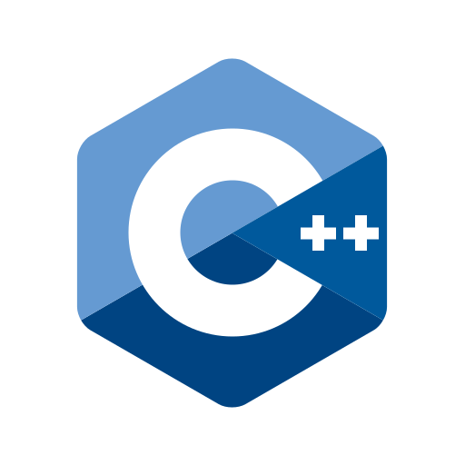
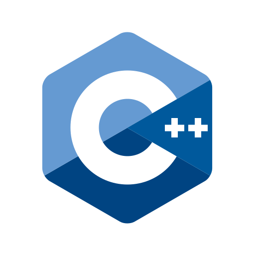

Hi I'm Divyanshu
Frontend Developer in India who creates websites using HTML, CSS and Javascript.
I'm from Uttar Pradesh, India, working in web development
and Designing. I enjoy turning complex problems into simple, beautiful and intuitive
designs.
About me Tools I Use


 



About Me What I Do
Frontend Developer
Frontend development involves creating the visual and interactive elements of websites using HTML, CSS, and JavaScript. It ensures websites are responsive, accessible, and engaging, providing a seamless user experience across various devices and screen sizes.
UIUX Designer
UI/UX design focuses on making digital products visually appealing and user-friendly. UI deals with the design's aesthetics, while UX ensures the product is easy to use and meets user needs effectively, enhancing overall satisfaction.
Logo Designing
Logo designers craft unique and memorable symbols that encapsulate a brand's identity. Their work ensures the logo resonates with the target audience, effectively conveying the brand's values, mission, and personality in a visually appealing manner.
Photo/Video Editing
Video and photo editing involves enhancing and manipulating visual content to improve its quality, add creative effects, and construct compelling narratives. This process engages the audience, making the content more appealing and impactful.
Frontend Developer
Frontend development involves creating the visual and interactive elements of websites using HTML, CSS, and JavaScript. It ensures websites are responsive, accessible, and engaging, providing a seamless user experience across various devices and screen sizes.
UIUX Designer
UI/UX design focuses on making digital products visually appealing and user-friendly. UI deals with the design's aesthetics, while UX ensures the product is easy to use and meets user needs effectively, enhancing overall satisfaction.
Logo Designing
Logo designers craft unique and memorable symbols that encapsulate a brand's identity. Their work ensures the logo resonates with the target audience, effectively conveying the brand's values, mission, and personality in a visually appealing manner.
Photo/Video Editing
Video and photo editing involves enhancing and manipulating visual content to improve its quality, add creative effects, and construct compelling narratives. This process engages the audience, making the content more appealing and impactful.
About me Education
Graduation
BTech. (2021-2025)
I am pursuing a BTech in Computer Science and Engineering with a specialization in Artificial Intelligence, focusing on advanced technologies and algorithms to develop intelligent systems and innovative solutions.
InterSchool
BTech. (2019-2020)
I completed my 12th grade with a focus on Physics, Chemistry, and Mathematics (PCM), laying a strong foundation for my BTech in Computer Science and Engineering.
HighSchool
BTech. (2017-2018)
I completed my 10th grade with a focus on Science, English, Mathematics, Social Science, and IT, providing a comprehensive educational foundation for my further studies.